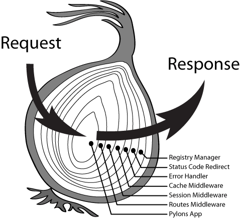

koa2框架是一个轻量级的基于node实现的web框架，,它是由express框架的原班人马打造，特点是优雅、简洁、表达力强、自由度高，所有功能都通过插件实现。
我的理解
- 打开node_modules/koa/lib，会发现一共就4个文件
1
2
3
4application.js
context.js
request.js
response.js
context.js
封装了引入了的request.js和response.js，包装了两个对象，通过context.js可以使用request和response的方法和属性，组成一个方便使用的大对象，Context对象是koa特地创建出来用作在中间件以及其它各部件之间传递信息的，请求和响应的两大对象也同时挂载到它名下，本身也作为中间件被app.js引入
1
module.exports = {...} //app.js作为入口，引入koa
app.js中默认生成的logger方法里，ctx对象作为函数参数
1
2
3
4
5
6
7// logger
app.use(async (ctx, next) => {
const start = new Date()
await next()
const ms = new Date() - start
console.log(`${ctx.method} ${ctx.url} - ${ms}ms`)
})如何封装request对象和response对象，此处仅以request为例，response类同
1
2
3
4
5
6
7
8
9
10
11
12
13
14
15
16
17
18
19
20
21
22
23
24
25
26
27
28
29
30
31
32const delegate = require('delegates');
delegate(proto, 'request')
.method('acceptsLanguages')
.method('acceptsEncodings')
.method('acceptsCharsets')
.method('accepts')
.method('get')
.method('is')
.access('querystring')
.access('idempotent')
.access('socket')
.access('search')
.access('method')
.access('query')
.access('path')
.access('url')
.access('accept')
.getter('origin')
.getter('href')
.getter('subdomains')
.getter('protocol')
.getter('host')
.getter('hostname')
.getter('URL')
.getter('header')
.getter('headers')
.getter('secure')
.getter('stale')
.getter('fresh')
.getter('ips')
.getter('ip');
简单了解delegates
- 作用在于将外部对象接受到的操作委托到内部属性进行处理，也可以理解为将对象的内部属性暴露到外部，简化我们所需要书写的代码。
api
- Delegdeate.prototype.method(name) 在 proto 对象上新增一个名为 name 的函数，调用该函数相当于调用 proto 的 prop 属性上的 name 函数。
- Delegate.prototype.getter(name) 新增一个 getter 到 proto 对象，访问该 getter 即可访问 proto 的 prop 的对应 getter。
- Delegate.prototype.setter(name) 新增一个 setter 到 proto 对象，访问该 setter 即可访问 proto 的 prop 的对应 setter。
- Delegate.prototype.access(name) 在 proto 上同时新增一个 getter 和一个 setter，指向 proto.prop 的对应属性。
request.js
- 封装了http的request对象，作为中间件
1
module.exports = {...}
request.js
- 封装了http的response对象，作为中间件
1
module.exports = {...}
小结
- 这三个js没啥好多说的，就一些http的对象方法，譬如获取头信息，IP，url等等，自己debug看下对象里有什么内容，会使用就得了，核心还是application.js
核心源码
- 先提看了源码我不理解的点，根据知识储备不同，大家的问题也不尽相同，作为小白的我来说，问题多多，下面列举一些主要的问题，然后结合问题来说说源代码
- 构造方法里Obeject.create这个方法派什么用处？
- 什么是generator函数？
- compose方法干了什么?
application.js
首先，构造函数初始化对象，把context，request，response实例化
1 | constructor(options) { |
- 先解答第一个问题，因为我们在同一个应用中可能会有多个new Koa的app，为了防止这些app相互污染，用拷贝的方法让其引用不指向同一个地址。
我认为最核心的概念之一 app.use
中间件的加载
1
2
3
4
5
6
7
8
9
10
11
12
13
14
15use(fn) {
//判断中间件必须满足类型是函数
if (typeof fn !== 'function') throw new TypeError('middleware must be a function!');
//判断函数是否为generator函数
if (isGeneratorFunction(fn)) {
deprecate('Support for generators will be removed in v3. ' +
'See the documentation for examples of how to convert old middleware ' +
'https://github.com/koajs/koa/blob/master/docs/migration.md');
//是的情况，将传入函数转化为generator函数
fn = convert(fn); //fn可以是三种类型的函数，普通函数，generator函数，还有async函数。最后generator会被转成async函数
}
debug('use %s', fn._name || fn.name || '-');
this.middleware.push(fn); //use使用的中间件都会放进构造方法初始化时的数组中
return this;
}解答第二个问题，generator可以让某一个函数执行某个动作之后暂时停止，之后 再次触发，重新进入，再次执行，生成器的环境（绑定的变量）会在每次执行后被保存，下次进入时可继续使用。
app.listen 这里会引出一连串大闸蟹，放在一起理解，包含最核心的概念之二 callback()
- 封装了http模块提供的http.createServer和listen方法，将this.callback()传入，这个一看你就懂，关键还是传入的this.callback()函数
1
2
3
4
5
6
7
8
9
10
11
12
13
14
15
16
17
18
19
20
21
22
23
24
25
26
27
28
29
30
31
32
33
34
35
36
37
38
39
40
41
42
43
44
45
46
47
48
49
50
51const http = require('http');
listen(...args) {
debug('listen');
const server = http.createServer(this.callback());
return server.listen(...args);
}
callback() {
//compose就是koa中间件洋葱模型的核心了，具体见下方洋葱模型理解
const fn = compose(this.middleware);
//koa错误处理，判断app上错误监听的数量，也就是判断是否我们的代码里有自己写监听，如果没有那么走koa的 this.onerror方法
if (!this.listenerCount('error')) this.on('error', this.onerror);
//koa的委托模式会在这个函数里体现，这里要结合context.js里的源码中delegates部分
const handleRequest = (req, res) => {
//将req, res包装成一个ctx返回
const ctx = this.createContext(req, res);
//它代表的是app上的handleRequest方法，而不是它自己
return this.handleRequest(ctx, fn);
};
return handleRequest;
}
createContext(req, res) {
//包装出一个全局唯一的context对象
//前面构造方法时Object.create(context)，现在又用Object.create包装了一层，目的是让每次http请求都生成一个context，
const context = Object.create(this.context);
//如上同理，并且Object.create(this.request)赋值给context.request，在使用时可以用ctx.request可以访问到request对象
const request = context.request = Object.create(this.request);
//如上同理，并且Object.create(this.response)赋值给context.response，在使用时可以用ctx.response可以访问到response对象
const response = context.response = Object.create(this.response);
//一些赋值，一看就明白
。。。
return context;
}
//关于error理解不是很透彻，以后再补
onerror(err) {
//判断是否为原生错误
const isNativeError =
Object.prototype.toString.call(err) === '[object Error]' ||
err instanceof Error;
if (!isNativeError) throw new TypeError(util.format('non-error thrown: %j', err));
if (404 === err.status || err.expose) return;
if (this.silent) return;
//打印error
const msg = err.stack || err.toString();
console.error(`\n${msg.replace(/^/gm, ' ')}\n`);
}
洋葱模型，打开koa-compose的index.js

1 | module.exports = compose |
- 解答第三个问题，compose的作用就是将所有的中间件生成一个中间件自执行链，有点类似co模块。这样我们只需要执行第一个中间件，后面的中间件就会依次执行。可以发现每个中间件都被被封装成了一个Promise
参考：
从源码学习使用 node-delegates
浅析js中的Object.create()
超级详细的koa源码解析
Nodejs与ES6系列3:generator对象
nodejs异步流程控制co 模块
koa篇–koa2中异常处理机制